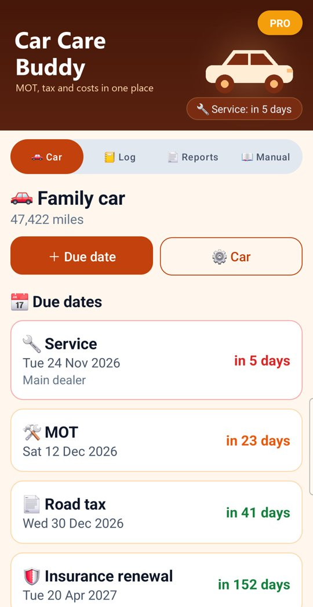
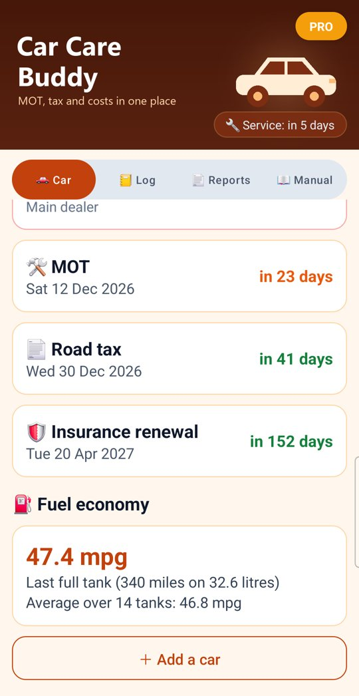
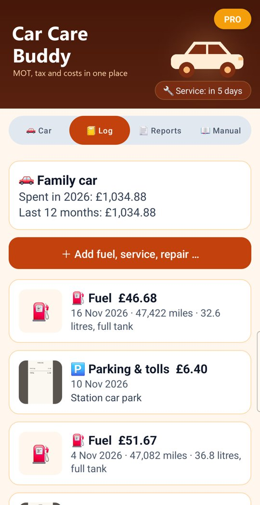
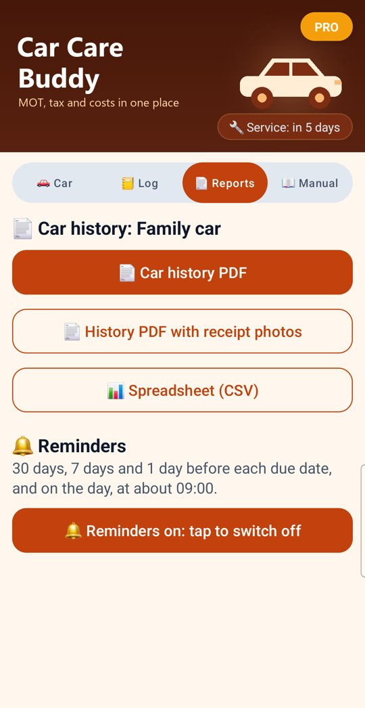

Everything below is the same text as the Manual in the app (📖 Manual tab).
Car Care Buddy keeps your car's due dates (MOT, road tax, insurance renewal, service and more) and reminds you before each one. It also keeps a log of fuel, services, repairs and other costs, with a photo of the receipt, works out your fuel economy, and makes a PDF of the car's history.
It doesn't look anything up online: the dates and costs are the ones you type in. Your MOT due date is on your last MOT certificate, and your insurance renewal date is on your policy.
Tap ＋ Add a car and type its name (for example "Blue hatchback") and, if you like, its registration. Choose miles or km for its mileage.
Tap ⚙️ Car to rename it or delete it with its dates and log. With more than one car (Pro), tap the car's name at the top of 🚗 Car to switch.
On 🚗 Car, tap ＋ Due date, choose what it is (MOT, road tax, insurance renewal, service, breakdown cover, warranty or other) and pick the date.
Each date shows how many days are left: orange when it's within 30 days, red when it's 7 days or less or has passed.
The app reminds you at about 09:00, 30 days, 7 days and 1 day before, and on the day. Android may ask you to allow notifications. If the phone was off, you get the reminder the next morning. Switch reminders off or on in 📄 Reports. If Android blocks the app's notifications, 📄 Reports shows 🔕 Notifications are blocked: tap it to allow them.
When you log an MOT, service, insurance or road tax, the app offers to move that due date on by a year. Tap a due date to change or delete it.
On 📒 Log, tap ＋ Add to log fuel, a service, MOT, repair, tyres, insurance, road tax, parking, a wash or anything else. Type the cost and, if you like, the mileage and a note, then take a photo of the receipt (or choose one you already took).
Tap an entry to see its receipt, add one, or delete the entry. The top of 📒 Log shows what you've spent this year and in the last 12 months.
For fuel, also type the litres and the mileage, and say whether you filled the tank. When you fill up twice, the app works out the economy between the two full tanks: miles per gallon (UK gallons) or litres per 100 km. Part fills in between are added to the next full tank.
If you forget a fill-up, the next figure will look too good: just keep logging and it evens out. A fill-up logged without the mileage can't be placed, so the economy starts again from the next full tank with a mileage.
A full history with receipts is handy if you sell the car, claim on a warranty or argue a repair.
Free: 1 car, due dates with reminders, the log with receipt photos, fuel economy and the car history PDF. No ads.
Pro (one payment, no subscription): unlimited cars, the history PDF with receipt photos and the spreadsheet.
Tap GO PRO at the top. Restore purchase gets Pro back on a new phone with the same Google account.
No account, no sign-in, and no ads. Your cars, dates, log and receipt photos are kept only in the app's own storage on this phone. Car Care Buddy has no servers and doesn't look up your registration. A PDF or spreadsheet only leaves the phone when you share it yourself.
Google Play handles the Pro purchase.
Car Care Buddy v1.0 (Build 1)
Publisher: AppStack Studio
| Question | Many car apps | Car Care Buddy |
|---|---|---|
| Reminders | Often one date, or a subscription | MOT, tax, insurance, service and more: 30 days, 7 days, 1 day before and on the day |
| Receipts | Numbers only | A photo of each receipt, printed in the history PDF (Pro) |
| Price | Free with ads or a subscription | Free for 1 car; Pro is one payment for life (no subscription) |

1. Due dates
Every due date with the days left, coloured as it gets close.

2. Fuel economy
mpg from full tank to full tank, last tank and average.

3. Log
Fuel, services, repairs and more, with receipt photos and totals.

4. Reports
Car history PDF, spreadsheet and the reminder switch.
Screenshots: Car Care Buddy 1.0 on a Samsung Galaxy S24, with sample data and drawn sample receipts.